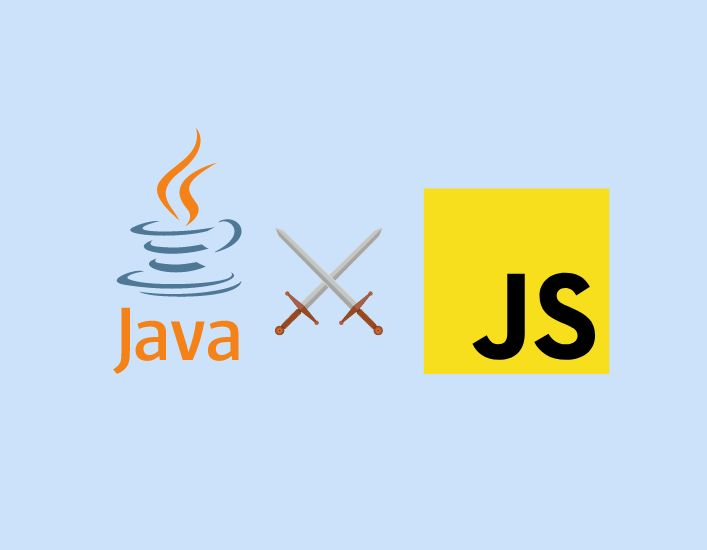

What's In a Name: The Difference Between Java and JavaScript

Circa 2021 when I began to study Computer Science at the undergraduate level, I began to hear
foreign terms such as Node, React, and sleep. Two terms that I heard even more often,
however, were Java and JavaScript. Fun fact: they aren't the same. Let's learn the
difference.
According to GeeksforGeeks, "JavaScript is a lightweight programming language (“scripting
language”) and is used to make web pages interactive. It can insert dynamic text into HTML."
Java, on the other hand, is "an object-oriented programming language and has a virtual machine
platform that allows you to create compiled programs that run on nearly every platform." While
Java can stand alone as a programming language, JavaScript is contained within a webpage and
integrates with its HTML content. Another difference is that, "Java applications can run in any
virtual machine(JVM) or browser, while JavaScript code used to run only in the browser, but (can
now) run on the server via Node.js."
Well, now we know the difference. Hope that helped. See you next week for another look at my
intrusive thoughts.